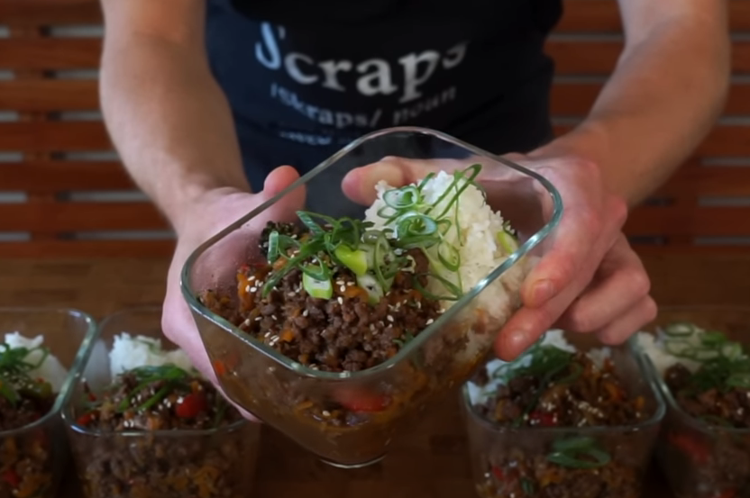

Back to the list of recipes
Beef Stir Fry

Ingredients
Main
- 1.5 tbsp Peanut Oil
- 1 kg Beef Mince
- 1 Brown Onion, Thinly Sliced
- Carrot, washed and grated
- 1 Bunch broccolini, Chopped
- Seasoning to taste
Sauce
- 100ml Low sodium soy sauce
- 2 tbsp Rice vinegar
- 70g Brown Sugar
- 3 tsp Toasted sesame oil
- 5 Cloves garlic, minced
- 15g Ginger, minced
- 0.5 tsp Chilli Flakes
- Seasoning to taste
Garnish
- 1 Spring onion, sliced (optional)
- Sesame seeds to taste (optional)
Jasmine rice
- 300g Jasmine rice, washed
- 500g Cold water
- Salt to taste
Steps
- Slice onion in thin halfrings
- Slice bell pepper in thin pieces
- Shred large carrot with most large holes side
- Slice broccolini in 3 even size pieces (or use broccoli)
- Slice spring onion in tiny pieces, separate white and green half for different stages of cooking
- Mince ginger and garlic in paste
- Mix Ingredients from "sauce" section in bowl to make a sauce
- Rice: Throw rice into the water, mix it, get it to the boil, put on low fire, close and let for 12 minutes
- Rice: Turn off the heat, leave for another 6 minutes. Then open it, mix it.
- Use Vok. Add oil. Throw all beef mince, spread evenly, cook for 3 minutes to achieve nice gold and brown crust. Salt it to taste
- Mix it for another 3 minutes. Add onion, cook for 2 minutes mixing it in the same time.
- Throw carrot, broccolini, bell pepper, salt to taste, white part of green onion. Mix it and cook for 2 minutes.
- Add sauce and mix it with everything, cook it for 3 minutes.
- Remove it from the heat
- Serve it in 5 dishes with rice evenly, add green part of green onion. Enjoy!
Back to the list of recipes